Gold Coins
Gold Coins (GC) are a special kind of currency exclusive to NovaRO. It can be exchanged for Nova Points, spent to purchase consumables, headgears, and more!
Earning Gold Coins
There are various ways to earn gold coins:
- From Daily Rewards, Daily Battleground Victories, and Daily Monster Hunting Bounty;
- Participating in our various Automated Events;
- Killing rare Champion Monsters, which spawn in several maps, for a chance to get a 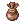 Small Gold Coin Bag containing Gold Coins;
- By exchanging Event Tickets, obtained through GM-hosted Events or the Daily Rewards Calendar;
- Buying from other players by browsing the NovaRO Market (@go 37) or by making an offer in #trade channel.
Uses
Nova Point Exchange
You can consume a  Gold Coin to gain 10 Nova Points, or go to the 2nd floor of Main Office and talk do Marco [Gold Exchanger] for bulk conversion of gold coins. Nova Points can be spent at the Nova Shop or to purchase Alternative Outfits.
Gold Coin to gain 10 Nova Points, or go to the 2nd floor of Main Office and talk do Marco [Gold Exchanger] for bulk conversion of gold coins. Nova Points can be spent at the Nova Shop or to purchase Alternative Outfits.
Mysterious Slot Machine
At this event, you can pull the lever of the Mysterious Slot Machine for 2 Gold Coins. Among the prizes you can find Gold Coins, Bloody Branches, Gym Passes, buff foods and much more!
Exclusive Equipment
See: Angel Poring Boots and Heroic Capes
Quests
Some quests, such as Headgear Quests and Headgear Awakening may require a variable amount of Gold Coins.
Master of Coin
Master of Coin is the NPC that uses Gold Coins as currency. He is located on the second floor of the Main Office. You can warp there easily through the warper NPC (Special Area's > Main Office), or using the [@go main] [@go 50] commands.
If you are looking for the  Endeavor Token options, check Endeavor Tokens.
Endeavor Token options, check Endeavor Tokens.
Master of Coin's current list:
| Shop List | ||||
|---|---|---|---|---|
| Image | Name | Price | Type | Description |
| 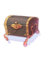 | Seagod's Protection Box | 10
|
Consumable | Rental Item
A box that has a Seagod's Protection. (6 hour rental) |
| 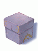 | Giant Fly Wing Box | 15
|
Consumable | Contains 10 Giant Fly Wings. |
| 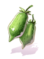 | Silvervine Fruit | 30
|
Consumable | Sunkissed Silvervine Fruit.
Humans think that it is normal and tastes bad but it is valuable in Malangdo. Use these as currency to exchange for access to memorial dungeons and to exchange for enchanting A-E grade coins with the Special Vending Machine and Coin Exchanger in Malangdo. Weight: 0 |

|
Token of Siegfried | 30
|
Consumable | Revives the dead character. |
| 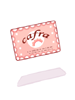 | Kafra Card | 60
|
Consumable | Opens a window which allows you to select between Primary, Secondary and Guild Storage to open once. |
| Halter Lead 7 Day Box | 60
|
Consumable (Rental) | Rental Item
Contains a Halter Lead that summons a mount based on your starting class. (7 day rental) Mounts increase movement speed by 25%. | |
| 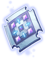 | Immune Shield[1] | 75
|
Shield | If upgraded to +5 or higher, increases 1% of tolerance against Neutral attack. (The tolerance increase is limited to refine level 12) per refine level. If upgraded to +7 increased tolerance against Neutral by 5%. If upgraded to +9 or higher increases tolerance to Water, Earth, Fire, and Wind by 5%. |

|
Enchanced Variant Shoes[1] | 75
|
Footgear | MaxHP/MaxSP +12%. Bonus 1 DEF/MDEF per refine rate. |
| Heroic Backpack[1] | 75
|
Garment | Enables the usage of  Greed Greed
If refined to +7 or higher and base stats (without modifiers) is equal to 90 or higher,
If refined to +9 or higher and base stats (without modifiers) is equal to 90 or higher,
| |
| Giant Fly Wing Box(100) | 125
|
Consumable | Contains 100 Giant Fly Wings. | |
| 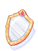 | Convex Mirror | 175
|
Consumable | Shows the location of the MVP on the minimap with a + sign which persist after teleportation or shows you the location of the "Tomb" which marks the MVP slain, time of death and the killer. The Tomb will vanish as soon as the MVP spawns.
Exception: Convex mirror will not locate Lord of the Dead, Bio Lab MVPs, Ktullanux, Memory of Thanatos, or Event MVPs. |
| HE Battle Manual | 250
|
Consumable | + 400% EXP from Mob Kills for 30 minutes. + 100% EXP from Quest Turn-Ins for 30 minutes. | |
| 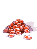 | HE Bubble Gum | 300
|
Consumable | Item drop rate increases by 200% for 15 minutes. |
| 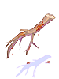 | Bloody Branch | 350
|
Consumable | Summons a random MVP monster when used. |
| 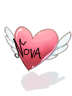 | I Love Nova | 350
|
Upper Headgear | Proof of your love for NovaRO (And Nova by extension)
Increases Maximum HP by 500.
Doubles the healing potency of |
| 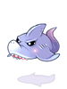 | Shark Hat | 400
|
Upper Headgear | STR +1, AGI +2, MDEF +1.
Increases damage to Water property by 5%. Increases damage taken by Water property monsters by 10%. |
| 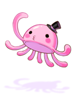 | Octopus Hat | 400
|
Upper Headgear | AGI +2.
Low chance of autocast Lv.5 Indestructible (except in upgrade attempts). |

|
Accurate Wild Rose[1] | 400
|
Upper & Middle Headgear | MaxHP -10% ASPD +3%.
When equipped with [Fish In Mouth], autocasts |
| 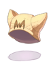 | Malangdo Hat[1] | 400
|
Upper Headgear | FLEE +6. |
| Hobgoblin's Hat | 400
|
Upper Headgear | Increases HP and SP recovery rate by 5%. | |
| 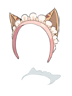 | Neko Mimi Kafra[1] | 400
|
Upper Headgear | Inflicts a random abnormal status to an enemy when physically attacked.
MDEF +5. |
| 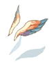 | Peco Ears | 400
|
Middle Headgear | AGI +1. |
| Star-Spangled Bandana[1] | 500
|
Upper Headgear | All Stats +1.
Enables the use of Level 1 | |
| 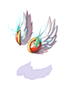 | Power Of Thor | 500
|
Upper Headgear | Int +1, Dex +1, Mdef +3
Adds 7% tolerance to Wind Property. If refined to +8 or higher, has a low chance of adding 40 Atk for 6 seconds while melee attacking and a low chance of adding 40 Matk for 6 seconds while casting spells on a target. |

|
Wing Headphone | 600
|
Upper & Middle Headgear | Increases MATK by a 1% per refine.
If refined to +7 Increases the damage of Reverberation by 30% and subtracts 18 from the SP Cost If refined to +10 decreases the after cooldown of Metallic Sound by 2 seconds. |
| 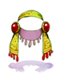 | Rune Hairband | 600
|
Upper Headgear | Increases resistance to Neutral Property attacks by 3%.
Add a low chance of recovering HP/SP when the user deals Physical Melee Damage. Hit +5. |
| 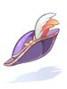 | Little Feather Hat[1] | 600
|
Upper Headgear | DEX +2.
Critical Damage +10%. If equipped with 'Sharp Arrow's, adds an additional Critical Damage +5%. If equipped with a +7 Little Feather Hat[1] or higher, adds an additional Critical Damage +5% with 'Sharp Arrow's. When equipped with the bow +10 Falcon Blitz[2], the cast time of [Focus Arrow Strike] is reduced by 50%. |
| Chibi Pope[1] | 600
|
Upper Headgear | +7 MDEF, Increases healing effectiveness by 5%.
Increases healing effectiveness when upgraded above +6. If upgraded to +9 or higher, increases MATK by 7%. If upgraded to +12 or higher, increases MATK by an additional 5%. If worn with Blush (or Blush [1]), increases healing effectiveness by an additional 10%. | |
| 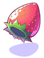 | Strawberry Hat | 600
|
Upper Headgear | Drops Strawberry at a certain rate when killing monsters.
Increases the drop rate of Strawberry with each refine level and caps at level 10. |
| Asgard Blessing[1] | 700
|
Upper Headgear | All Stats +2 Reduces Damage from all elements by 5% Recovers 2% HP and 1% SP every 10 seconds. | |
| Scarlet Rose | 700
|
Lower Headgear | ATK +1% MATK +1% Max SP + 30. | |
| 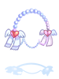 | Heart Wing Headband[1] | 750
|
Upper Headgear | Reduces Cast Delay by 5% and SP Consumption by 10%
Every 3 refines, reduces Cast Delay and SP Consumption further by 3%. |
 Spell Circuit [GC] [1] Spell Circuit [GC] [1]
|
850
|
Upper Headgear |
Matk + 20 per 2 refine rate.
When equipped with Mental Stick, increase Psychic Wave damage by 5% every 2 refine rate of Mental Stick.
| |
| 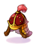 |  General Helm [GC] [1] General Helm [GC] [1]
|
850
|
Upper Headgear |
Atk + 15 per 2 refine rate.
When equipped with Gungnir or Gungnir [2], increase Banishing Point damage by 7% every 2 refine rate of Gungnir.
|
 Fancy Feather Hat [GC] [1] Fancy Feather Hat [GC] [1]
|
850
|
Upper Headgear |
Atk + 15 per 2 refine rate.
When equipped with Nidhoggur's Shadow Garb [1], increase Arrow Storm damage by 12% per 2 refine rate of garment.
| |
| 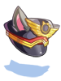 | 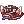 Ruff Officer [GC] [1] | 850
|
Upper Headgear |
Atk + 15 per 2 refine rate.
When equipped with Thanatos Katar, Atk + 20 per 2 refine rate of weapon.
|
 Amistr Beret [GC] [1] Amistr Beret [GC] [1]
|
850
|
Upper Headgear |
Matk + 20 per 2 refine rate.
When equipped with Holy Stick, Matk + 10 and increase Adoramus damage by 30% every 2 refine rate of Holy Stick.
| |
| Chung Cap [GC][1] | 1750
|
Upper Headgear Defense: 0 Weight: 10 Required Level: 130 Jobs: All |
| |
| 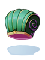 | Antiquity Cap [GC][1] | 1750
|
Upper Headgear Defense: 0 Weight: 10 Required Level: 130 Jobs: All |
|
| 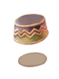 | Stripe Cap [GC][1] | 1750
|
Upper Headgear Defense: 0 Weight: 10 Required Level: 130 Jobs: All |
|
| 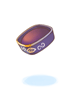 | Clark Sidecap [GC][1] | 1750
|
Upper Headgear Defense: 0 Weight: 10 Required Level: 130 Jobs: All |
|
| 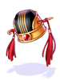 | Ceremonial Crown [GC][1] | 1750
|
Upper Headgear Defense: 0 Weight: 10 Required Level: 130 Jobs: All |
|
| 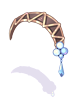 | Celestial Coronet [GC][1] | 1750
|
Upper Headgear Defense: 0 Weight: 10 Required Level: 130 Jobs: All |
|
| 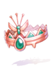 | Red Coronet [GC][1] | 1750
|
Upper Headgear Defense: 0 Weight: 10 Required Level: 130 Jobs: All |
|


The Claw
The Claw is a machine located in Eden Group HQ which holds 4 exclusive headgears. This list is rotated on the 1st and 15th of every month.
Players can spend 250 Gold Coins to get a random hat, or 500 Gold Coins to choose a specific hat.
| Headgears found in The Claw | |||
|---|---|---|---|
| Image | Name | Slot | Effect |

|
Ramen Hat [1] | Upper | DEX +4. Non Upgradable. Has a chance of autocasting Dex Decrease Lv1 when being physically attacked. |
| Gelato Hat [1] | Upper | MaxHP +300. Enables usage of Frost Driver Lv 1. If refined to +7, enables usage of Frost Driver Lv 5. | |
| Stunning Star Eyepatch | Upper | Stun resistance +15% | |
| 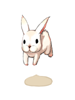 | Moon Rabbit Hat [1] | Upper | ATK +5. MATK +5%. If refined to +5 or higher, ATK +1 and MATK +1% according to the refine level. |
| 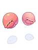 | Crab Nipper Hat | Upper | When using physical attacks, random chance to autocast Cold Bolt Lv 1. When killing Fish monsters, low chance to obtain Crystal Blue. |
| AFK Hat | Upper | - | |
| Ice Cream Hat | Upper | Enables usage of Frost Driver Lv 3. MDEF +3. | |
| Pink Night Cap [1] | Upper | ATK +5%. MATK +5%. | |
| 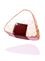 | Rice Ball Hat [1] | Upper | - |
| 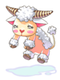 | Amistr Hat | Upper | VIT +5. When being physically attacked, random chance to reduce all incoming damage by 20% for 2 seconds. MDEF -20%. |
| Vanilmirth Hat | Upper | MDEF +1. When physically attacking, has a chance to autocast a random Lv1 Bolt spell. | |
| Lif Doll Hat [1] | Upper | INT +1. Increase DEF and MDEF according to the refine level. | |
| 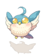 | Filir Hat | Upper | Reflects 1% of melee physical attack damage. Cannot be refined. |
| 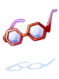 | Hexagon Spectacles | Middle | Flee +2. |
| 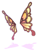 | Butterfly Wing Ear | Middle | DEX +2 |
| 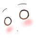 | Blank Eyes | Middle | Cannot be refined. |
| 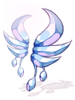 | Ice Wing Ears | Middle | LUK +1. When being physically attacked, low chance to autocast Cold Bolt Lv 5. |
| Life Ribbon | Middle | INT +1. MDEF +2. Increase the wearer's Heal effect by 2%. | |
| Watermelon Slice | Lower | Cannot be refined. | |
| Leek in Mouth | Lower | Reduce damage received from Small sized monsters by 2%. | |
| 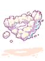 | Shaving Cream | Lower | Cannot be refined. |
| 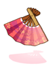 | Fan in Mouth | Lower | Cannot be refined. |
| 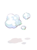 | Chilly Breath | Lower | INT +1 |
| Four Leaf Clover | Lower | LUK +3. MDEF +2 | |
| Bubble Gum in Mouth | Lower | MATK +5 | |